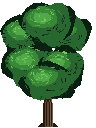
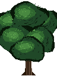
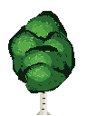
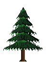
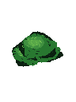

Korona nachodzi na pień (pień + brązowy klin pod spodem, potem liście). Poprzednia wersja miała przerwę, bo klastry były za wysoko, a pień rysowany po koronie. Folder: assets/trees-preview/ — gra bez zmian.




